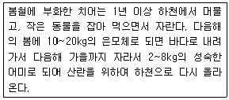
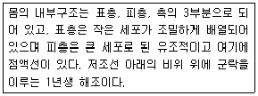

수산양식기사 (2008-03-02 기출문제)
1과목: 어류양식학
1. 가물치의 산란습성에 대한 설명으로 틀린 것은?
- 비가 오는 이른 아침에 많이 산란한다.
- 산란기는 대략 5~7월이다.
- 산란시 못에서 100m2 당 암수 50마리를 수용하는 것이 적당하다.
- 알은 분리부성란이다.
(정답률: 62%)

2. 다음 중 비단잉어의 붉은색을 선명하게 해주는 사료 첨가제는?
- 번데기
- 스피룰리나
- 토코페롤
- CMC
(정답률: 72%)
3. 다음은 어떤 양식생물을 설명한 것인가?

- 연어
- 은어
- 은연어
- 시마연어
(정답률: 72%)
4. 인공수정 된 자주복 알의 대량 부화에 대한 설명으로 틀린 것은?
- 바닥면적이 넓은 수조(100~300L)에서 통기식 지수상태로 부화시킨다.
- 20메쉬(mesh)의 화학섬유 방충망에 알을 놓아 유수식 수조 속에 쌓아놓고 부화시킨다.
- 플라스크 같은 구형의 용기를 사용하여 알이 항상 유동상태에 놓이도록 하여 부화시킨다.
- 아트킨스 부화기에 넣어서 부화시킨다.
(정답률: 88%)
5. 자주복 알의 부화적온 범위는?
- 8~10℃
- 11~14℃
- 15~19℃
- 20~24℃
(정답률: 63%)
6. 산란촉진방법 중 일반적으로 어류 산란촉진에 이용되지 않는 것은?
- 광주기
- 호르몬 주사
- 온도 변화
- 정자 현탁액
(정답률: 79%)
7. 다음 중 불포화 지방산에 속하는 것은?
- 라우르산(lauric acid)
- 미리스트산(myristic acid)
- 스테이르산(stearic acid)
- 디에이치에이(DHA, Docosahexaenoic acid)
(정답률: 91%)
8. 어류 육상 수조식 양식장의 사업규모를 결정하기 위한사항 중 틀린 것은?
- 양식대상종을 조사하여 결정한다.
- 확보된 대지와 사육수조 시설 면적을 동일하게 하여 결정한다.
- 생산어류의 발육단계 중 취급 대상을 정하고 생산목표량을 결정한다.
- 부속시설과 관리실의 규모를 결정한다.
(정답률: 90%)
9. 순환여과식 양식의 사육수 정화 능력에 가장 영향이 적은 것은?
- 여과 재료의 크기
- 여과 재료의 표면적
- 여과 재료의 형태
- 여과 재료의 비중
(정답률: 70%)
10. 무지개송어의 해수 사육에 대한 설명으로 옳은 것은?
- 어린 무지개 송어는 해수에서 잘 큰다.
- vibrio 병에 잘 걸린다.
- 성장이 늦어진다.
- 성숙 현상이 일어나지 않는다.
(정답률: 88%)
11. 로티퍼의 최적 배양조건을 가장 잘 설명한 것은?
- 대형 로티퍼의 증식 가능 최저 수온은 10℃이며, 소형 로티퍼는 20℃이다.
- 해수를 10~15‰로 희석하여 배양한다.
- 소형인 경우 일간 증식율이 30℃가 20℃ 보다 1.5배 정도 높다.
- NH3-N은 17ppm을 유지해야 한다.
(정답률: 66%)
12. 은어의 생태 습성으로 틀린 것은?
- 맑고 따뜻한 물을 좋아하며 여름에는 상류로 가을에는 하류로 이동한다.
- 산란은 남부에서는 9~10월에 이루어지고 부화적온은 대략 12~20℃이다.
- 소상은 일몰 후에서 익일 일출 전까지 주로 밤에 이루어진다.
- 먹이로 규조류, 녹조류, 남조류 등을 좋아한다.
(정답률: 62%)
13. 양어 양식에 있어서 구입한 종묘의 방양 초기부터 각 단계의 크기별로 선별을 철저히 하여 사육하는 가장 중요한 이유는?
- 먹이를 절약하기 위하여
- 성장을 빠르게 하기 위하여
- 상호공식에 따른 감모를 방지하기 위하여
- 기생충의 예방을 위하여
(정답률: 91%)
14. 가외찌 붕어의 특징이 아닌 것은?
- 산란의 예상이 힘들다.
- 월동중의 체중감소가 적다.
- 질병은 체표의 손실에 기인되는 경우가 많다.
- 사람과 잘 익숙해진다.
(정답률: 85%)
15. 냉수성 어류인 송어의 사육시 체중에 대한 사료의 양이 가장 많아 요구되는 시기는?(단 계곡수를 이용하는 경우)
- 1~2월
- 4~5월
- 7~8월
- 10~11월
(정답률: 56%)
16. 무지개 송어 양식장 용수의 이상적인 용존산소량의 함량은?
- 2~3㎎/ℓ
- 4~5㎎/ℓ
- 6~7㎎/ℓ
- 10~11㎎/ℓ
(정답률: 83%)
17. 넙치의 산란, 부화 및 발생 등에 대한 설명 중 틀린 것은?
- 자연에서의 산란 가능 수온은 11~17℃이다.
- 수온이 18℃ 전후이면 부화 후 30일 정도에서 몸길이가 11mm 전후로 된 후 변태하게 된다.
- 수온 13~18℃에서는 수정 후 50~78시간 정도에서 부화한다.
- 부화된 자어를 수용할 못의 수온은 13℃로 유지하고, 광선의 밝기는 50,000lux로 한다.
(정답률: 85%)
18. 무지개송어 양식에서 알 10만개를 부화하는데 필요한 주수량은? (단, 주입수의 용존산소량 : 1L 당 8㎖, 배출수의 산소 용존량 1L 당 5㎖ 10만개의 소비하는 산소량 : 1시간당 0.5L)
- 약 100L/h
- 약 166L/h
- 약 62L/h
- 약 40L/h
(정답률: 89%)
19. 다음 중 감성돔의 자어 난황 흡수기 이후의 초기 먹이로 가장 적합한 것은?
- 알테미아
- 로티퍼
- 클로렐라
- 스피툴리나
(정답률: 85%)
20. 틸라피아의 양식어종으로서의 특징으로 틀린 것은?
- 저수온에서 잘 성장한다.
- 종묘생산이 쉽다.
- 사료조건이 까다롭지 않다.
- 염분 변화에 잘 견딘다.
(정답률: 63%)
2과목: 무척추동물양식학
21. 다음 중 종묘 방양에 대한 설명으로 틀린 것은?
- 양성계획에 따라 알맞은 방양시기와 양을 결정해야 한다.
- 종묘의 방양은 수온이 상승할 때를 택한다.
- 방양량은 양성법 및 양성장의 환경조건을 따른다.
- 부착성 동물은 유영동물에 비해 방양밀도가 낮다.
(정답률: 71%)
22. 참가리비의 인공종묘생산에 관한 설명으로 적절하지 않은 것은?
- 먹이로 Monochrysis lutheri나 Cyclotella nana를 이용하면 유생의 성장이 빠르고 부유유생기간도 비교적 짧다.
- 어미의 선정은 자연산란기보다 다소 빠른 시기에 준비를 해야만 한다.
- 성숙부유유생의 적정 먹이 농도는 ㎖당 10,000~15,000 개체이다.
- 저서초기 치패의 폐사율이 높기 때문에 중간육성 기간이 필요하다.
(정답률: 38%)
23. 키조개 양식에 관한 설명 중 틀린 것은?
- 치패는 간출선 전후해서 모래질이 50~80%인 곳에 많다.
- 바닥에 착생한 치패를 이식, 관리할 경우에는 m2당 100개체 이하로 하는 것이 좋다.
- 간조선 근처 사니질에 종묘를 균일하게 뿌려 양성한다.
- 간석지 양성인 경우, 해적구제 외의 간출시 잡물을 제거한다.
(정답률: 79%)
24. 대합류의 이동습성과 관계된 관리방법 설명으로 틀린 것은?
- 내면에 방양한다.
- 조위망 등으로 조위시설을 한다.
- 깊은 곳으로 이동한 대합을 양성장에 다시 골고루 뿌려 준다.
- 겨울에는 이동이 많으므로 밀도를 자주 조정한다.
(정답률: 70%)
25. 문어의 천연 종묘 확보와 가두리식 양성에 관한 설명으로 옳은 것은?
- 200~600g 내외 되는 소형인 것을 종묘로 쓰는데, 연승 및 예망등으로 어획한 것이 가장 좋다.
- 종묘 관리에서 주의할 것 중 하나는 먹이 길들일 때 주로 먹이의 선도이다.
- 많이 쓰이는 양성시설은 단지이다.
- 사육밀도(방양량)을 결정하는 가장 큰 요인은 수온이다.
(정답률: 46%)
26. 피조개 양식어장 내의 해적생물이 아닌 것은?
- 염통성게
- 불가사리
- 긴얼굴갯지렁이
- 꽃게
(정답률: 36%)
27. 전복의 이식을 위한 수송에 대한 설명 중 맞는 것은?
- 환경변화에 약한 소형은 이식용 종묘로 부적합하다.
- 장거리 육상 수송은 주로 해수 중 수송을 한다.
- 온도가 낮을수록 공중활력은 커서 생존기간이 길다.
- 수온이 낮은 12월~1월이 수송에 가장 적합한 시기이다.
(정답률: 70%)
28. 인공종묘생산 시 부유유생 시기에 먹이생물을 공급하지 않아도 되는 종은?
- 성게
- 해삼
- 피조개
- 우렁쉥이
(정답률: 79%)
29. 각 종별 양성방법으로 적합하지 않는 것은?
- 대합 - 밧줄 수하식 양성
- 굴 - 연승 수하식 양성
- 참가리비 - 귀매달기 수하식 양성
- 해삼 - 투석식 양성
(정답률: 54%)
30. 다음 중 조개류의 비만도(condition index)를 가장 잘 설명한 것은?
- 각내 용적분의 연체부 건조 중량에 1000을 곱한 값
- 각내 용적분의 연체부 생식소 중량에 1000을 곱한 값
- 각내 용적분의 연체부 중량에 1000을 곱한 값
- 각내 용적분의 연체부 글리코겐 축적량에 1000을 곱한 값
(정답률: 74%)
31. 바지락 양식에 관한 설명으로 틀린 것은?
- 유생은 부유생물 뒤 착저할 때 일시부착생활을 한 후 잠입생활에 들어간다.
- 채묘는 잠입생활 직전 부착기질에 부착시켜 채묘한다.
- 석시법은 간출된 다음 종묘를 방양하는 것을 말한다.
- 치패가 많이 발생하는 곳은 육수의 영향을 받는 간석지 중심 수역이다.
(정답률: 29%)
32. 전복 수컷의 성숙한 생식소의 색은?
- 회색
- 심록색
- 담황색
- 백색
(정답률: 84%)
33. 다음 중 여과 섭식 동물이 아닌 것은?
- 피조개
- 참굴
- 소라
- 우렁쉥이
(정답률: 56%)
34. 피조개 종묘생산을 위한 유생용 먹이와 가장 거리가 먼 것은?
- Cheotoceros simplex
- Cyclotella nana
- Isochrysis sp.
- Skeletonema costatum
(정답률: 63%)
35. 다음 중 대합류의 수확시기를 결정하는 기준으로 가장 적합한 것은?
- 생식소의 발달 정도
- 육질의 무게
- 각고와 각장
- 전중량
(정답률: 50%)
36. 우리나라에서 진주조개의 피한장과 양성장이 반드시 필요한 주 이유는?
- 폐사를 방지하고 성장을 촉진시키기 위해
- 양식장을 넓게 활용할 필요가 있기 때문에
- 수확장소와 양성장이 각각 다르기 때문에
- 수산업법에 규정되어 있기 때문에
(정답률: 72%)
37. 게의 유생에 속하는 것은?
- 메갈로파
- 벨리저
- 트로코포라
- 플로테우스
(정답률: 86%)
38. 우리나라에서 자연산 대하의 어미로서 채란할 수 있는 가장 빠른 시기는?
- 4월경
- 6월경
- 8월경
- 10월경
(정답률: 29%)
39. 후기채묘한 굴을 단련상에 옮겨 단련시키는 주된 목적은?
- 성장억제
- 공중활력 증강
- 원반당 부착밀도 조절
- 해적생물에 의한 피해방지
(정답률: 66%)
40. 참굴의 각장이 1~5cm 이고, 수온이 18~23℃일 때 1개체당 해수 여과량은 약 L/h인가?
- 20L/h
- 2L/h
- 5L/h
- 10L/h
(정답률: 50%)
3과목: 해조류양식학
41. 미역의 어미줄로 가장 많이 쓰이는 것은?
- 나일론
- 사란
- 폴리에틸렌
- 실크
(정답률: 75%)
42. 다음 중 억제 배양하는 다시마의 종묘를 월하시키는데 가장 알맞은 조도는?
- 800lux
- 1000lux
- 1200lux
- 1400lux
(정답률: 70%)
43. 무기질 사상체 배양을 위한 모조 취급방법에 대한 설명으로 틀린 것은?
- 붓으로 규조를 잘 씻어낸다.
- 가장자리에 색이 붉은 곳을 절편으로 취한다.
- 세균의 혼입이 안되게 해야 한다.
- 절편의 크기는 1cm2정도가 알맞다.
(정답률: 36%)
44. 김 양식장에서 참 김과 방사무늬 김 사이에 자리바꿈이 일어나는 주된 원인은?
- 병해에 대한 저항성의 차이
- 환경에 대한 적응력의 차이
- 영양번식성의 차이
- 양식기간의 차이
(정답률: 78%)
45. 우뭇가사리의 번식에서 볼 수 없는 것은?
- 포자에 의한 번식
- 배아에 의한 번식
- 재생력에 의한 영양 번식
- 포복지에 의한 영양 번식
(정답률: 47%)
46. 양식 김에 대한 설명이 맞는 것은?
- 둥근 돌김은 엽체의 가장자리에 거치가 있다.
- 잇바디돌김은 웅성이주이고 만생종이다.
- 방사무늬돌김은 자웅이주이고 영성이 약하다.
- 긴잎돌김은 자웅동주이고 만생종이다.
(정답률: 71%)
47. 다음 중 풀가사리의 직립체 발생 시기는?
- 9월 상순~ 11월 하순
- 11월 상순~ 1월 하순
- 1월 상순~ 3월 하순
- 3월 상순 ~ 5월 하순
(정답률: 77%)
48. 다시마의 엽장별 생육 단계에 있어 나타나는 형질 특징에 대한 설명으로 틀린 것은?
- 엽장 1~5cm에서는 미역과 매우 비슷하게 열각이나 주름이 없다.
- 엽장 10~20cm에서는 양 가장자리에 주름이 조금 생기고 용무늬가 나타난다.
- 엽장 2~2.5m에서는 주름이 없어지고 끝녹음이 멈춘다.
- 엽장 3~3.5m에서는 포자낭반이 나타난다.
(정답률: 55%)
49. 덮발에 의한 싸발의 관리과정에서 김 삭이 1mm 정도 자랐을 때 갑자기 투명도가 높고 해파리가 많이 나타났다면 이때의 효과적인 대책은?
- 고노출선으로 옮긴다.
- 단기 냉장을 한다.
- 뜬흘림발로 전개한다.
- 저노출선으로 옮긴다.
(정답률: 64%)
50. 김발 관리가 바르게 된 것은?
- 중말기에는 노출을 적게 한다.
- 10℃이하에서는 노출을 적게 한다.
- 채취한 뒤에는 발을 높인다.
- 김 채취 2~3일 전은 발을 낮춘다.
(정답률: 39%)
51. 김 엽체가 함유하고 있는 색소가 아닌 것은?
- 클로로필 a
- 피코에리드린
- 피코시아닌
- 푸코크산틴
(정답률: 79%)
52. 미역비늘구멍의 원인생물은?
- 조균류
- 등각류
- 요각류
- 히드라충
(정답률: 71%)
53. 미량 금속 원소의 흡수를 촉진하는 물질은?
- Vitamin B12
- EDTA
- glibberellin
- NH4-N
(정답률: 81%)
54. 미역종묘의 월하 배양 관리시 적정 조도는? (단, 수온 25℃ 정도를 기준으로 한다.)
- 암흑처리
- 200~500 lx
- 1000 lx 전후
- 2000 lx 전후
(정답률: 55%)
55. 세균에 의해 발생되는 갯병은?
- 흰갯병
- 녹반병
- 싹갯병
- 암종병
(정답률: 34%)
56. 양식에 있어 생식세포를 갖는 성숙한 김을 채취를 하는 것이 유리한 주 이유는?
- 호흡작용에 의해 자체 에너지 소비률이 높기 때문
- 광합성 작용에 의해 생장이 좋아지기 때문
- 방출된 포자는 양식장이 해를 주기 때문
- 조기 생산이 유리하기 때문
(정답률: 38%)
57. 다시마 양성법 중 성숙시기가 가장 빠른 것은?
- 2년 양식
- 촉성 양식
- 억제배양 양식
- 1년 양식
(정답률: 86%)
58. 미역 유주자에 대한 내용 중 틀린 것은?
- 착생 전 헤엄쳐 다니는 동안 주광성은 없다.
- 2개의 편모로 헤엄친다.
- 서양배의 형태(pyriforn)이다.
- 성상 색소체를 가진다.
(정답률: 58%)
59. 다시마의 종묘 배양체의 수정률이 가장 좋은 조도는? (단, 수온은 13℃ 전후일 경우)
- 500 lx
- 2000 lx
- 3000 lx
- 5000 lx
(정답률: 55%)
60. 과포자의 잠입 상황을 현미경으로 확인할 때 적정 기준은? (단, 배율에 의한 현미경의 시야를 기준으로 한다.)
- 50배당 2~3개
- 150배당 1개
- 100배당 2~3개
- 100배당 20~30개
(정답률: 73%)
4과목: 양식장환경
61. 다음 중 연체동물이 아닌 것은?
- 고둥류
- 조개류
- 문어류
- 따개비류
(정답률: 54%)
62. 유생은 좌우 대칭으로 에키노플루테우스(echinopluteus)라 하며, 부유생활을 하고, 성체가 되면 초식성으로서 많은 해조류를 섭식하기도 하는 것은?
- 해삼류
- 성게류
- 전복류
- 바다나리류
(정답률: 39%)
63. 다음 중 플랑크톤 식성 어류는?
- 은어, 명태
- 쥐돔, 병어돔
- 색돔, 병어
- 개복치, 돌돔
(정답률: 55%)
64. 다음 어류의 기관 중 연령사정에 사용되지 않는 것은?
- 비늘
- 이석
- 인두치
- 새개골
(정답률: 43%)
65. 어류의 배설기관 설명 중 틀린 것은?
- 어류의 배설기관은 콩팥과 아가미이다.
- 담수어류는 아가미에서 염분을 섭취하고 수분을 배설한다.
- 해산어류는 해수보다 낮은 체색을 유지하기 위하여 많은 양의 염분을 아가미에서 배설하는 염류의 배설 작용에 관여한다.
- 콩팥은 척추의 좌우 아래쪽에 뻗어 있는 두 상의 가늘고 긴 암적색의 기관으로 체강의 등쪽 벽에 위치한다.
(정답률: 31%)
66. 다음 어류 중 특히 앞니가 발달한 어종은?
- 갈치, 삼치
- 청상아리, 청새리상어
- 복어, 쥐치
- 망상어
(정답률: 60%)
67. 모체에서 방출된 포자는 곧 발아하며 얇은 세포층으로 된 편평한 반상체인 좌로 되는 해조류는?
- 매생이, 청각
- 미역, 다시마
- 참김, 방사무늬 김
- 불등가사리, 풀가사리
(정답률: 44%)
68. 다음 중 암수한몸이며, 변태하지 않고 직접 발생하는 종은?
- 화살벌레
- 따개비
- 우렁쉥이
- 성게
(정답률: 28%)
69. 대부분의 연골어류에서 몸의 비중을 줄이기 위한 생태적인 특징으로 가장 적합한 것은?
- 비중이 낮은 지방을 많이 참유한 큰 간(肝)을 가지고 있다.
- 비중이 낮은 지방을 많이 함유한 큰 위(胃를) 가지고 있다.
- 수분을 많이 함유한 큰 간을 가지고 있다.
- 수분을 많이 함유한 큰 위를 가지고 있다.
(정답률: 59%)
70. 다음 어류 중 수컷의 배지느러미가 변형되어 교미기가된 종류는?
- 청어
- 농어
- 성대
- 가오리
(정답률: 53%)
71. 어류의 유문수에 대한 설명으로 틀린 것은?
- 동일한 어류에 있어서는 그 수가 일정하므로 종의 분류형질로 이용되기도 한다.
- 소화효소를 분비하여 소화를 돕는 동시에 흡수하는 기능도 가지고 있다.
- 일반적으로 육식성인 어류에 유문수가 많다.
- 유문수는 창자와 같은 구조를 하고 있다.
(정답률: 36%)
72. 다음 수산생물 중 수명이 가장 긴 종은?
- 은어
- 대하
- 주꾸미
- 전복
(정답률: 33%)
73. 연안 환경오염에 대해 저항력이 가장 큰 패류는?
- 개량조개
- 가라비
- 대합
- 우럭
(정답률: 41%)
74. 다음 중 낭상체 구조를 가진 목은?
- 접합조목
- 홑파래목
- 청각목
- 울로트릭스목
(정답률: 40%)
75. 어류의 인공채란시 어류의 뇌에서 적출하여 인공배란 조절에 주로 사용하는 부분은?
- 뇌하수체 전엽
- 뇌하수체 중엽
- 뇌하수체 후엽
- 사상하부
(정답률: 56%)
76. 다음 중 분리부성란을 갖는 어류는?
- 연어
- 넙치
- 병어
- 붕어
(정답률: 56%)
77. 다음 설명에 해당하는 것은?

- 다시마
- 갈래곰보
- 미역
- 청각
(정답률: 20%)
78. 대합과 라마르크 대합의 설명으로 틀린 것은?
- 촉수의 구조는 대합이 라마르크 대합보다 단조롭다.
- 외투막 돌기의 구조는 라마르크 대합이 대합보다 단조롭다.
- 대합은 정문이 없다
- 라마르크 대합은 패각의 무늬가 성장함에 따라서 단순해진다.
(정답률: 49%)
79. 어류 비늘의 종류 중 화석어류에서 주로 나타나는 것은?
- 둥근 비늘
- 빗비늘
- 코스민비늘
- 굴비늘
(정답률: 28%)
80. 다음 어류 중 등지느러미에 이차 성징을 나타내는 것은?
- 쥐치
- 망상어
- 은어
- 피라미
(정답률: 24%)
5과목: 수산질병학
81. 다음 중 가장 적극적인 수질관리가 필요한 양식법은?
- 정수식 양식
- 유수식 양식
- 축제식 양식
- 순환여과식 양식
(정답률: 63%)
82. 수중에 독성물질이 유입되면 이동성이 있는 동물은 독물의 위험한 구역에서 도피하게 된다. 이와 같이 동물이 도피하게 되는 농도를 무엇이라 부르는가?
- 치사농도
- 혐기농도
- 불호농도
- 만성농도
(정답률: 63%)
83. 수온과 수중의 산소포화량(O2 mL/L)의 관계는?
- 수온이 높을수록 산소포화량은 낮아진다.
- 수온이 높을수록 산소포화량은 높아진다.
- 수온이 낮을수록 산소포화량도 낮아진다.
- 수온과 산소포화량은 관계가 없다.
(정답률: 74%)
84. 펌프의 흡입관 설치시 펌프를 향한 배관의 기울기로 가장 적절한 것은?
- 1/10 이상
- 1/20 이상
- 1/40 이상
- 1/50 이상
(정답률: 25%)
85. 이산화탄소가 수중에 다량 축적되면 물의 pH는?
- 산성화된다.
- 알칼리화된다.
- 중성이 된다.
- 변화가 없다.
(정답률: 57%)
86. 사육수조 내에서 발생하는 고형 오물을 수조 밖으로 자연스럽게 제거하는 장치로서 가장 적합한 것은?
- 벤튜리 이중관
- 스크린 드림필터
- 에어 리프트
- 사이펀 배수
(정답률: 67%)
87. 다음 중 넙치의 육상수조식 양어장의 적지가 아닌 곳은?
- 태풍이나 파도의 영향이 적은 곳
- 풍파에도 수질 혼탁이 적은 곳
- 염분이 변화가 큰 곳
- 판매시장이 가까운 곳
(정답률: 75%)
88. 다음 중 총량 규제를 바르게 설명한 것은?
- 한 지역 전체의 오염물질의 총량을 규제하는 것을 말한다.
- 대규모 특정 공장에서 나오는 오염물질의 양을 규제하는 것을 말한다.
- 한 지역 전체의 오염물질 양과 농도를 규제하는것을 말한다.
- 대규모 특정 공장에서 나오는 오염물질의 농도를 규제하는 것을 말한다.
(정답률: 52%)
89. 다음 중 수계의 pH에 대한 설명으로 옳은 것은?
- 해수는 산성이며 완충 능력이 매우 약하다.
- 담수는 알칼리성이며 완충 능력이 매우 강하다.
- 노지 양식장에서 일반적으로 맑은 날 아침에는 pH가 낮고 오후에는 pH가 높아진다.
- 소독용 생석회를 살포하면 pH가 더욱 낮아진다.
(정답률: 58%)
90. 탁도가 수산생물에 미치는 영향에 대한 일반적인 설명중 틀린 것은?
- 어류의 부화율에 영향을 끼친다.
- 내만성 어류에 비하여 외양성 어류가 탁도에 강하다.
- 어류는 혼탁 수역을 기피하는데 기피할 때의 탁도는 호흡에 영향을 주는 탁도보다 낮다.
- 탁도가 높을 시 패류는 점액이 비정상적으로 분비되고 아가미 표면에 현탁물이 차서 질식사 한다.
(정답률: 66%)
91. 암모니아의 성질이나 독성에 관한 설명으로 옳은 것은?
- 암모늄 이온과 유리 암모니아는 모두 동물에게 나쁜 영향을 끼친다.
- pH가 1단위 높아질수록 유리 암모니아의 양이 약 100배 증가한다.
- 높은 농도의 암모니아는 아가미에 손상을 입힌다.
- 용존 산소량이 증가하면 유리 암모니아의 독성도 증가한다.
(정답률: 60%)
92. 순환여과식 양식장의 특징에 대한 설명이 틀린 것은?
- 고도의 순환여과 장치를 갖추고 있어 가온한 물을 재사용하기 때문에 열에너지의 손실을 줄일 수 있고 또 어류 성장기간을 연장시킬 수 있다.
- 어류의 호흡에 필요한 용존산소의 보충과 대사 노폐물 및 먹이 찌꺼기의 제거는 인위적으로 한다.
- 순환여과식 양식의 장점은 수조내의 수용밀도를 가두리나 유수식 양식에서와 같은 정도의 고밀도로 할수 있는 점이다.
- 시설면적과 용수량이 적게 드나, 양식장소가 한정된 지역에서만 시설해야 하는 단점이 있다.
(정답률: 30%)
93. 「수질 및 수생태계 보전에 관한 법률」에 따르면 양어장을 포함한 모든 수질오염물질 배출사업장에 대해 배출 부과금을 부과하기로 되어 있다. 이에 따르면 폐수배출량에 따라 사업장을 1~5종으로 구분하는데 다음 중 3종에 속하는 사업장은?
- 배출규모가 1일 2000m3 이상인 곳
- 배출규모가 1일 200~700m3 인 곳
- 배출규모가 1일 50~200m3인 곳
- 배출규모가 1일 50m3 이하인 곳
(정답률: 48%)
94. 다음 중 인위적으로 온도를 제어하기가 비교적 쉬운 양식방법은?
- 가두리 양식
- 순환여과 양식
- 유수식 양식
- 조방적 못 양식
(정답률: 65%)
95. 생물학적 여과법 중 여과재가 필요하지 않는 여과법은?
- 살수여과법
- 침수여과법
- 회전원판여과법
- 활성오니여과법
(정답률: 66%)
96. 적조가 일어나는 원인으로 가장 중요한 것은?
- 고수온
- 가뭄
- 부영양화
- 외양수와 내만수의 혼합
(정답률: 71%)
97. 정수식 못양식에서 단위면적당 생산량을 향상시키려 할때 가장 우선되어야 할 조건은?
- 산소보충
- 천연먹이
- 종묘의 크기
- 물 깊이 조정
(정답률: 61%)
98. pH 7~8의 수계에서 존재하는 CO2의 주된 형태는?
- CO2
- H2CO3
- HCO3-
- CO32-
(정답률: 60%)
99. 김양식장에서 COD가 높은 경우 일어나는 현상으로 가장 적합한 것은?
- 영양염이 많으므로 생육이 좋다.
- 생리적 장애에 의한 암종병이 생기거나 엽체가 녹아 없어진다.
- 광선이 차단되므로 호흡장애가 있다.
- 수온의 상승요인이 되어 김잎의 끝녹음이 생긴다.
(정답률: 61%)
100. 호수의 부영양화란?
- 호수의 대장균의 수가 증가하는 현상
- 호수의 수질이 향상되는 현상
- 호수의 영양염류 함유량이 감소하는 현상
- 호수의 영양염류 함유량이 증가하는 현상
(정답률: 72%)
"비가 오는 이른 아침에 많이 산란한다."의 이유는, 비가 오면 물이 흐르는 강이나 호수로 가기 좋아서 산란을 하기 위해 이동하는 가물치들이 많아지기 때문입니다. 또한, 비가 내리면 물 온도가 조금 낮아져서 산란에 적합한 온도가 유지되기 때문입니다.